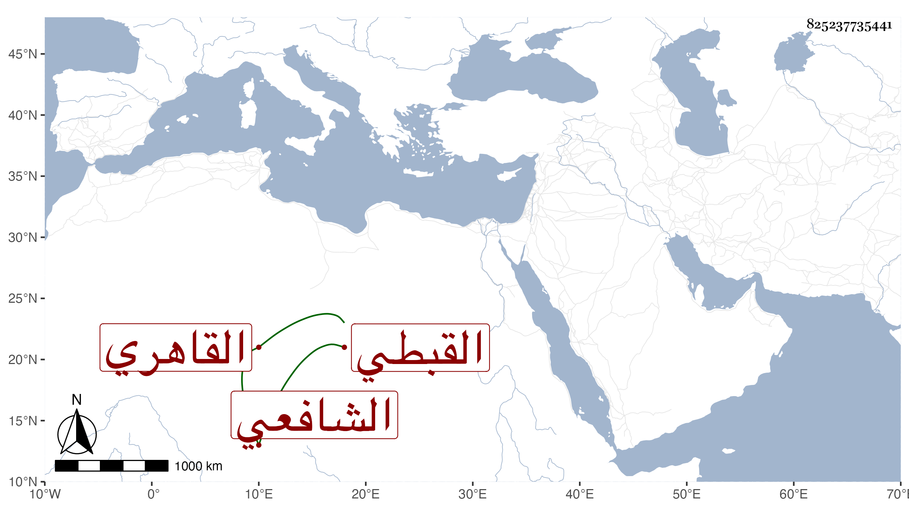

0902Sakhawi.DawLamic.ITO20230111-ara1.EIS1600.825237735441
Biography ID: 825237735441
844
عبد الكريم بن عبد الرحمن بن عبد الغني بن شاكر بن ماجد بن عبد الوهاب بن يعقوب كريم الدين بن المجد القبطي القاهري الشافعي أحد الاخوة ويعرف كسلفه بابن الجيعان . نشأ فحفظ القرآن والتنبيه واشتغل يسيرا وسمع على شيخنا وغيره ومما سمعه ختم البخاري بالظاهرية وحج غير مرة وحصل له انحلال عصب أقعد منه ، وحج وهو كذلك مع الرجبية ثم رجع واستمر حتى مات في جمادى الأولى سنة ثلاث وسبعين وكان ذكيا رحمه الله وعوضه خيرا
